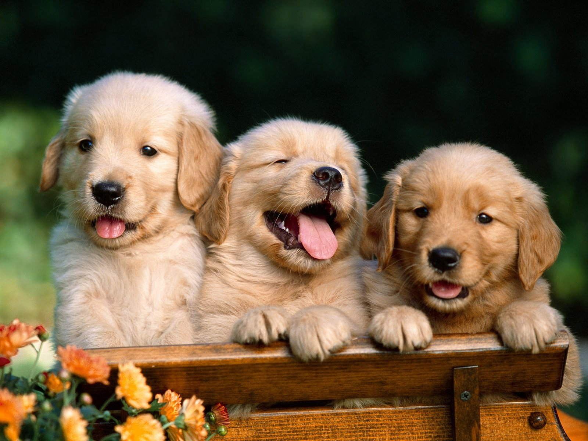

Соба́ка — домашнее животное, одно из наиболее популярных (наряду с кошкой) животных-компаньонов.
Домашняя собака была описана как самостоятельный биологический вид Линнеем в 1758 году;
в настоящее время данное научное название признаётся организациями, такими как Американское общество маммалогов.
Некоторые источники признают собаку подвидом волка.
В русскоязычных письменных источниках слово «собака» в значении соответствующего животного встречается по крайней мере с 1475 года. С зоологической точки зрения, собака — плацентарное млекопитающее отряда хищных семейства псовых.
Собаки известны своими способностями к обучению, любовью к игре, социальным поведением. Выведены специальные породы собак, предназначенные для различных целей: охоты, охраны, тяги гужевого транспорта и другого, а также декоративные породы (например, болонка, пудель).


Поощряйте хорошее поведение: в идеальных отношениях с собакой вам не нужно беспокоиться о дисциплине и можно просто хвалить её. Есть много способов позитивного закрепления хорошего поведения, и собаке будет особенно приятно получать полезные лакомства, когда она сделает что-то правильно. Чем больше вы поощряете свою собаку, тем усерднее она будет стараться соблюдать правила, чтобы сделать вас счастливым.
Поймайте питомца с поличным: чтобы приучение собаки к дисциплине имело успех, следует заострять её внимание на том или ином поступке или действии в процессе или сразу после. Нельзя делать собаке выговор за то, что она сделала когда-то давно. Она просто не поймёт, почему вы её наказываете. Однако можно учить собаку, как правильно вести себя, если поймать «на месте преступления». Это не значит, что нужно снарядить дом ловушками и дожидаться, пока собака ошибётся. Просто нужно быть начеку, реагируя на действия питомца быстро и адекватно.
Обязательно учитывайте состояние здоровья собаки: если питомец вдруг начинает мочиться на ковер и мебель после достаточного длительного периода соблюдения чистоплотности в доме, возможно, это связано с медицинской проблемой, например инфекцией мочевыводящих путей. Поскольку прочитать мысли животного невозможно, необходимо посетить ветеринарную клинику. Собаки не любят ходить в туалет там, где живут, поэтому считайте это потенциальным признаком проблемы со здоровьем.
Переключайте внимание своего пушистого друга: это один из лучших способов приучения собаки к дисциплине. Это означает, что нужно сначала остановить собаку в процессе совершения неподобающего действия, а затем предложить ей другой вариант, относящийся к правильному поведению. Например, если вы войдёте в комнату и увидите, что собака жуёт вашу туфлю или расчёску, быстро скажите ей «Нет!» и вытащите предмет изо рта. Когда собака успокоится, протяните ей игрушку для жевания. Пока собака будет жевать игрушку, подкрепляйте это позитивное поведение большим количеством похвал.
Приучение собаки к дисциплине может быть непростой задачей, но помните, что тем самым вы помогаете ей научиться быть лучшей версией себя. Используя основные методы дрессировки собак и относясь к щенку как к ребёнку, вы начнёте понимать, что учите его быть взрослым. Время, которое вы потратите на его обучение, не только улучшит поведение питомца, но и укрепит связь между вами. Будьте терпеливы и уделяйте время дрессировке собаки, чтобы меньше беспокоиться о дисциплине и проводить больше приятных минут вместе.
1. Подумайте, можете ли вы стать владельцем собаки Держать собаку у себя дома сможет далеко не каждый. Задумайтесь, позволяет ли ваш образ жизни завести животное, которое требует много внимания, времени и денег.
Если для вас принципиально важно идеальное состояние обоев и мебели, десять раз подумайте, стоит ли вам заводить собаку. Если вы много работаете и мало бываете дома, лучше собаку не заводить: она заскучает, станет неконтактной, неуправляемой, и, возможно, даже агрессивной. Многие заводят собак в тот момент, когда в семье должен появиться ребенок. Но сможете ли вы выдержать двойную нагрузку?
С собакой надо гулять. С одной стороны — это замечательный повод бывать на свежем воздухе, с другой — это накладывает определенные обязательства. Выясните, есть ли рядом с вашим домом место для выгула и готовы вы ли для этого вставать раньше.
Собаку надо кормить. Не думайте, что она будет прекрасно питаться вместе с вами. Ваша еда, даже самая изысканная, не подходит для собаки. Надо либо готовить для нее отдельно, либо покупать готовый корм.
Если вы любите путешествовать или часто бываете в командировках, собаку придется с кем-то оставлять или брать с собой — это не всегда просто.
Не заводите собаку, если у вас или кого-то из близких аллергия на собачью шерсть, а также если у вас алкогольная или наркотическая зависимость.
Коротко. Будьте готовы к тому, что собака полностью изменит ваш образ жизни.
2. Определитесь, для чего вам нужна собака и какая именно Есть собаки декоративные, охотничьи, сторожевые, пастушьи. Сейчас в интернете можно найти подробное описание каждой породы, сведения об особенностях темперамента, о предрасположенности к различным заболеваниям, об отношении к детям и об особых потребностях в дрессуре.
Определитесь, с какой целью вы хотите завести собаку. Если вы собираетесь много ходить с собакой по лесам и полям, собака должна быть достаточно выносливой. Если хотите подарить щенка бабушке, чтобы ей было не одиноко, не берите большую или гиперактивную собаку. А детям лучше завести спокойную собаку среднего размера или большую, потому что с маленькими дети часто обращаются как с куклами, в результате чего собаки получают травмы.
Если собака нужна вам для охраны, отдайте предпочтение тем породам, у которых охранные качества заложены генетически.
Породистая собака хороша тем, что вы более или менее знаете, чего от нее ждать. Конечно, каждая собака индивидуальна, но есть много общих качеств. Почитайте побольше, не торопитесь с выбором и помните, что на характер собаки влияет не столько порода, сколько воспитание и то, как с ней обращаются: бойцовская собака может стать добродушной няней, а лабрадор — агрессивным эгоистом.
Коротко. Породы различаются не только внешне. Внимательно изучайте особенности характера.
3. Выбирайте не только породу, но и заводчика Если вы уже определились с породой, внимательно отнеситесь к выбору места, где вы будете приобретать щенка. Ни в коем случае не покупайте щенков на рынке или по объявлениям. Найдите питомник, на сайте которого будет максимум информации. Хорошо, если такой питомник посоветуют знакомые, которым вы доверяете. На сайте должны быть фотографии щенков и их родителей. Таким образом, у вас уже может сформироваться представление о том, что из вашего щенка вырастет.
При покупке щенка составляется договор купли-продажи, в котором оговариваются некоторые важные моменты. Например, там может быть прописано, что вы обязуетесь не передавать щенка в третьи руки, а в случае невозможности содержать — вернуть в питомник.
Забирайте щенка только из питомника, не встречайтесь с заводчиком на улице. Посмотрите на условия, в которых содержатся собаки. Не вызовут ли они у вас сомнений? Доставку из другого города может позволить себе только опытный собаковод. Если у вас это будет первая собака, не рискуйте.
Заводчик должен предоставить вам документы на щенка. Это в первую очередь метрика, в которой прописаны порода, дата рождения, пол щенка, клички родителей. С этой метрикой вы можете потом пойти в клуб и зарегистрировать щенка на свое имя. Помимо метрики заводчик может дать вам ветеринарный паспорт щенка, в нем могут быть отметки о первой вакцинации. Хорошо, если в паспорте стоит печать ветеринарной клиники, но часто в целях экономии заводчики сами покупают вакцину и вакцинируют щенков. Тогда это вопрос доверия к заводчику.
Если вы уже прочитали о том, что собаки выбранной вами породы могут иметь какие-то генетические заболевания, расспросите об этом заводчика. Попросите показать ветеринарные заключения о том, какие обследования проводились у щенков и их родителей. Последите за его реакцией на ваши вопросы.
Заводчик — это очень важный человек в жизни вашей собаки. Выбирая щенка, выбирайте заводчика, с которым вам будет приятно общаться и советоваться в дальнейшем. Пусть это будет грамотный специалист, любящий собак, а не просто продавец.
Коротко. Очень важно, где и у кого приобретать породистого щенка.
4. Подумайте, не завести ли вам уникальную собаку Если вам нужна собака не для разведения, а для души, выбирайте самую лучшую «породу» — дворняжку. Это вариант экономный, интересный, непредсказуемый. Часто эти собаки отличаются крепким здоровьем, потому что прошли суровый естественный отбор. Но, с другой стороны, они обладают генами совершенно разных предков, и какой сюрприз вам преподнесет то или иное сочетание — неизвестно. Но уж точно второй такой собаки не будет ни у кого. Наблюдать, как растет и развивается беспородный щенок — очень увлекательное занятие. Вот он похож на щенка лайки, а через две недели − на борзую, а вот уже борода то ли появилась, то ли нет, а вот уши встали или… нет, только одно.
Беспородного щенка можно взять с улицы, купить по объявлению, взять у знакомых или из приюта. Старайтесь брать здорового щенка, если не готовы всерьез заниматься его лечением.
Коротко. Дворняги обычно милы, но всегда непредсказуемы.
5. Задумайтесь: может быть, вы готовы взять собаку из приюта? В приют часто попадают собаки взрослые, с жизненным опытом. Это может быть горе из-за разлуки с хозяином, бродяжничество, голод; страх или недоверие к людям. Бывают, конечно, среди приютских собак вполне социализированные, контактные, но все-таки, как правило, у них уже прошел тот возраст, когда так важно заложить первые навыки общения с хозяином. Многое, разумеется, зависит от условий содержания в приюте. Собаки могут содержаться и свободно, и в вольере по 10-20 животных, и в индивидуальных боксах. Важно, кто и как с ними общается, как долго собака находится в приюте.
С другой стороны, если вы берете уже взрослую собаку, то вполне возможно, сможете избежать проблем, которые связаны с маленькими щенками: лужи на полу, постоянное уничтожение обуви, обоев и книг.
Взять собаку из приюта — это несомненно акт благотворительности. Но подумайте, готовы ли вы к нему, есть ли у вас достаточно сил, времени, навыков, желания адаптировать уже сформировавшееся животное к своему образу жизни. И если вы в себе уверены — смело берите.
Коротко. Взять собаку из приюта — доброе дело, но к нему нужно быть готовым.
6. Обеспечьте своей собаке должный уход С собакой надо не только дружить, но и заниматься. Даже если у вас будет не охотник и не охранник, все равно собака должна быть воспитанной, знать основные команды. Если у вас нет достаточных навыков воспитания собаки — обратитесь к профессиональному кинологу.
Очень важно правильно кормить собаку. Помните, что корм несовместим с другими продуктами, то есть нельзя кормить одновременно мясом, кашей и кормом или сегодня − одно, а завтра — другое. Вам следует определиться, какой вариант вам больше подходит и сделать свой выбор, если не раз и навсегда, то хотя бы на длительное время. Помните, что хороший корм может показаться дорогим, но далеко не каждая собака будет хорошо себя чувствовать, питаясь дешевым.
Собаку необходимо хотя бы раз в год показывать ветеринарному врачу. Если у собаки прекрасное здоровье, это будут только ежегодные вакцинации. Но есть породы, склонные к определенным заболеваниям, и это значит, что периодически надо будет сдавать анализы, возможно, проходить ЭКГ и УЗИ или даже более дорогостоящие обследования. Возможно, врач порекомендует для вашей собаки специальную диету. Собакам более старшего возраста надо периодически показываться кардиологу, эндокринологу — сейчас в крупных ветеринарных клинках есть такая возможность.
Многие заводят собаку для имиджа или для статуса. Не забывайте, что собака — не игрушка и не предмет интерьера, а живое существо.
